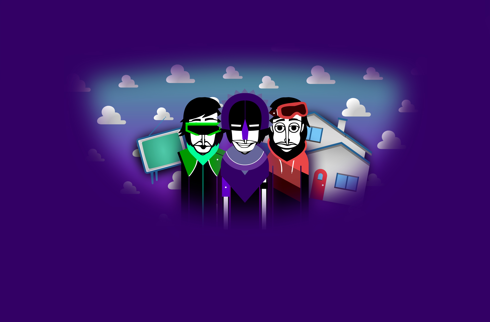

- Sundic -
| This is a joke mod about the fact that it is the original version of sunrise that has the most remakes, and this mod is trying to make fun of them |
|
MishaBring: Everything Status: Released (there will be updates) Inspired by: Sunrise Release Date: 2025 Linked Mods: None |
 |
|
Download Links PC: Here Android: Here Developer Notes: let one of the popular YouTubers on incredibox notice this |